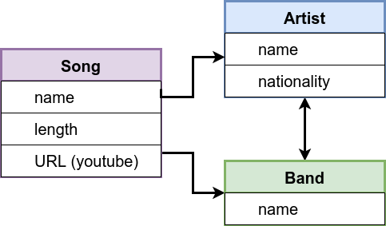
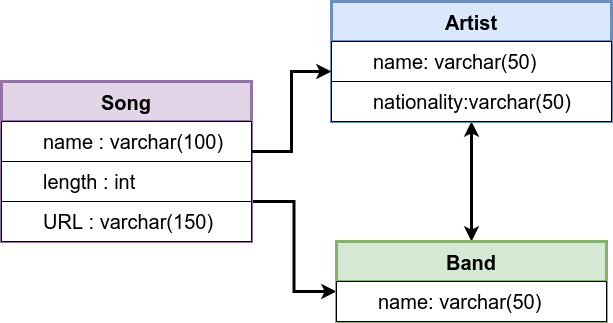
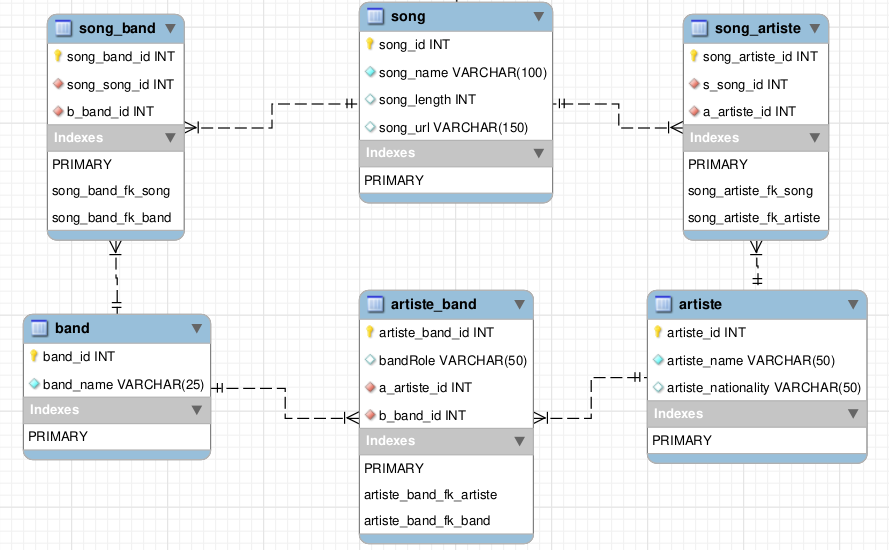
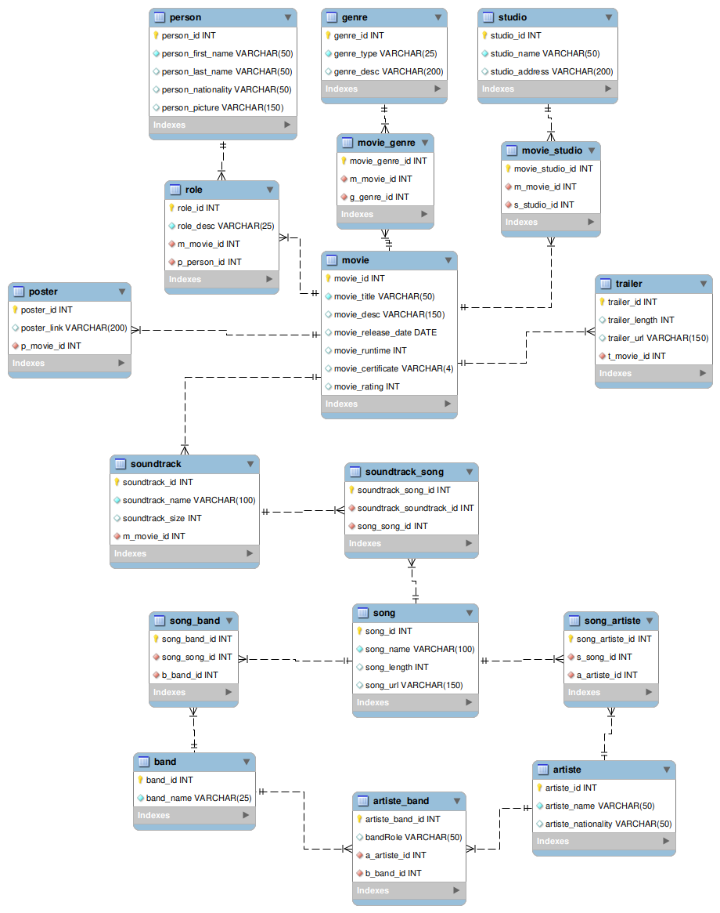

Keyboard shortcuts:
N/СпейсNext Slide
PPrevious Slide
OSlides Overview
ctrl+left clickZoom Element
If you want print version => add '
?print-pdf' at the end of slides URL (remove '#' fragment) and then print.
Like: https://wwwcourses.github.io/...CourseIntro.html?print-pdf
Изготвяне на цялостна база данни.
Упражнение върху предварително подготвена база данни
Created for
Created by
Data Modeling
Data Modeling
Conceptual Model
- Conceptual Data defines what the system should contains in terms of business concepts and rules.
- Let's model the data about a song and its performers 
{kind=link}
Logical Data Model
- Logical Data Model defines how the system should be implemented regardless of the DBMS.
- The logical data model adds further information (data types and etc.) to the conceptual data model elements. 
{kind=link}
Physical Data Model
- Physical Data Model describes how the system will be implemented using a specific DBMS system. 
{kind=link}
DB implementation
- The actual code which creates the schema. song_db_schema.sql
Create reports on examle DB
Create reports on examle DB
Get familiar with movie_db
Full data schema
{kind=link}
Part 1: movies data schema
{kind=link}
Part 2: soundtracks data schema
{kind=link}
Export MySQL Reports into CSV Files
Export MySQL Reports into CSV Files
Overview
- We can generate a CSV file from an SQL query with
SELECT ... INTO OUTFILE - Reference: SELECT ... INTO Statement
SELECT ... INTO OUTFILE 'file_name'
[CHARACTER SET charset_name]
[export_options]
export_options:
[{FIELDS | COLUMNS}
[TERMINATED BY 'string']
[[OPTIONALLY] ENCLOSED BY 'char']
[ESCAPED BY 'char']
]
[LINES
[STARTING BY 'string']
[TERMINATED BY 'string']
]
SELECT *
FROM sales_by_store
INTO OUTFILE './sales-by-store.csv'
FIELDS ENCLOSED BY '"'
TERMINATED BY ','
LINES TERMINATED BY '\n'
;
Exporting with header row - simple query
- If we have a simple query and we need to add a header row in output csv, then:
SELECT 'col1', 'col2', 'col3'
UNION ALL
SELECT col1, col2, col3
FROM table
INTO OUTFILE '/path/outfile.csv'
FIELDS ENCLOSED BY '"'
TERMINATED BY ','
LINES TERMINATED BY '\n';
Exporting with header row - complex query
- If we have a complex query (with ORDER BY, GROUP BY) and we need to add a header row in output csv, then:
SELECT 'col1', 'col2', 'col3'
UNION ALL
SELECT * FROM (
-- some complex query
SELECT col1, col2, col3
FROM table
) as t
INTO OUTFILE '/path/outfile.csv'
FIELDS ENCLOSED BY '"'
TERMINATED BY ','
LINES TERMINATED BY '\n'
Exerceses on creating reports
Exerceses on creating reports
- The tasks are given in next movie_db_reports_tasks.html file.
These slides are based on
customised version of
framework